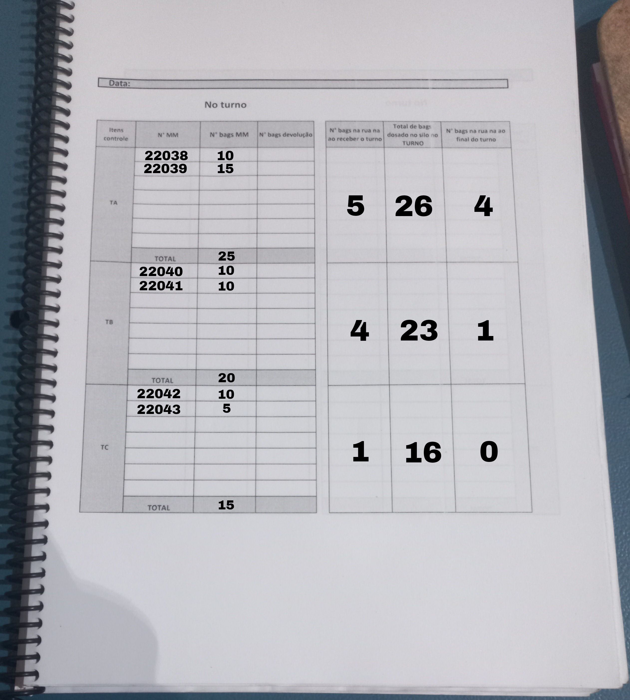
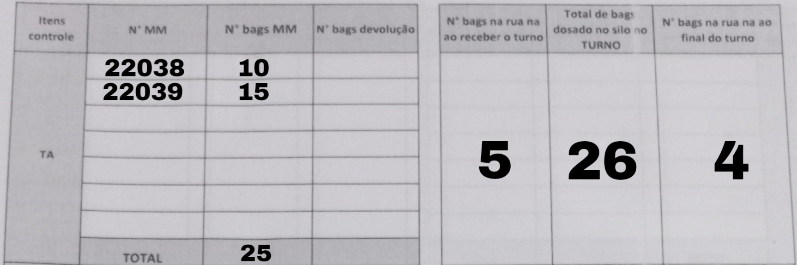
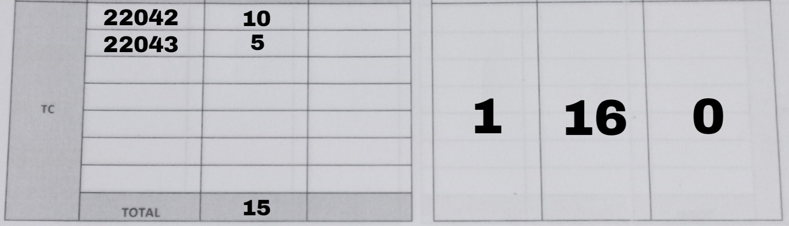

Procedimento Moega
É importante ressaltar o uso de Equipamentos de Proteção Individual (EPIs) para iniciar a atividade com segurança e responsabilidade:


Folha de movimentação de materiais:

Campo CEL definir a célula como "18"

Campo L definir o local como "XAR" de xaroparia
Campo Data adicione a data atual, exemplo: "1/7/24" sendo dia 1, mês 7 e ano 2024

Campo Requisitado por: adicione seu nome

Campo Solicitada adicione quantos bags foram solicitados, caso tenha 6 bags na rua. Defina o campo solicitada como 6.
Campo Entregue adicione quantos bags foram entregues pelo operador da empilhadeira
Campo Código Material adicione o código do açúcar. Exemplo: Se for refinado, defina o código como "30003518"; caso seja cristal, defina o código como "30003593"

Campo DEP adicione o horário que foi entregue o açúcar. Exemplo: 10:40.
Campo Lote adicione o seu nome.

Campo Descrição adicione o nome do açúcar refinado ou cristal.

Seguindo essas etapas, a folha mm ficará mais ou menos assim:
COM BASE NO AÇÚCAR REFINADO
COM BASE NO AÇÚCAR CRISTAL


Tabela do turno A:
Neste exemplo, mostra-se que o turno A fez um total de 10 bags na folha mm de número 22038 e 15 na folha mm de n°22039, totalizando 25 a soma das folhas mm. Ao receber o turno, tinha 5 bags na rua deixados pelo turno anterior e deixou 4 bags para o turno seguinte.

Tabela do turno B: Neste exemplo, mostra-se que o turno A fez um total de 10 bags na folha mm de n°22040 e 10 na folha mm de n°22041, totalizando 20 a soma das folhas mm. Ao receber o turno, tinha 4 bags na rua deixados pelo turno anterior e deixou 1 bags para o turno seguinte.

Tabela do turno C: Neste exemplo, mostra-se que o turno A fez um total de 5 bags na folha mm de n°22042 e 10 na folha mm de n° 22043, totalizando 15 a soma das folhas mm. Ao receber o turno, tinha 1 bags na rua deixados pelo turno anterior e deixou 0 bags para o turno seguinte. 
É importante lembrar de realizar o 5S para manter a organização da área de trabalho. Faça a limpeza do ambiente com constância, pois isso pode evitar acidentes!